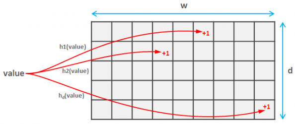

Sketch Algorithms
Those wierd-shaped things at the back of your toolbox
Mike Moran
Bloom filter
Why might you want one?
-
You have:
-
lots of data about items
-
... or an infinite stream
-
... so they won't all fit in memory
-
You need to check whether an item has been seen before
-
... and maybe you want to do this in real time
Must accept some limitations
-
You must tolerate some false positives
-
You can't iterate through all items trivially
Count-Min Sketch
From Bloom Filter to Count-Min Sketch

-
Instead of storing empty/full against a hash, increment a count
-
On lookup of item, find minimum of all counts found against hashes
-
That's (probably) your count for that item!
General Caveats of Sketch Algorithms
-
Needs good hash functions
-
Hard to debug
-
Fiendish maths
-
Can you really tolerate error?
-
I've yet to find a have a good reason to use them in production (instead of exact algorithms)
-
... though I was mostly considering Bloom filters before.
Takeaways
-
Sketches are cool!
-
Consider them when you're working with Big Data™ and you can afford to be a teensy bit wrong
-
Sketches are cool!
-
Resources:
Thanks!